April 2023
This project demonstrates iSCSI storage configuration, cluster creation, shared volumes, and Hyper-V high availability across multiple nodes.
Part 1 — Configuring iSCSI Storage
- Created a 500GB iSCSI Virtual Disk
- Added initiator IDs for both servers
- Connected the target using the iSCSI Initiator
- Verified storage through Disk Management
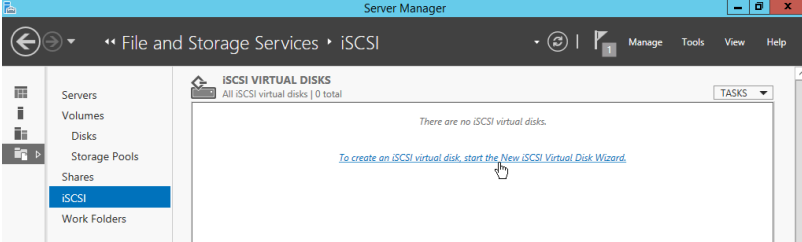
 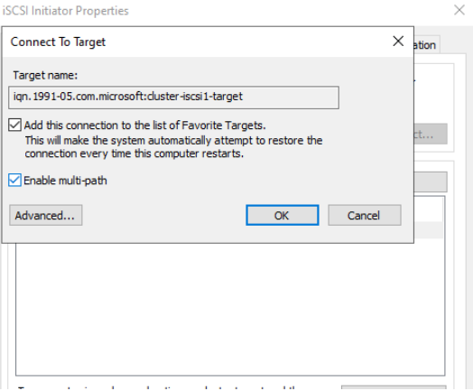
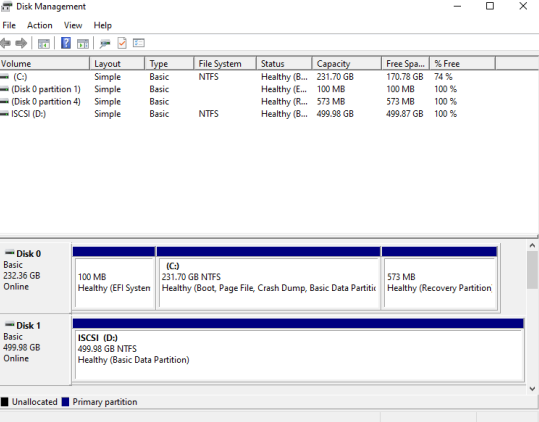
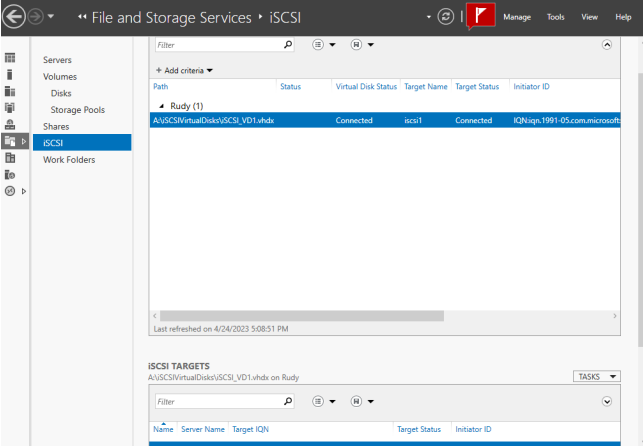
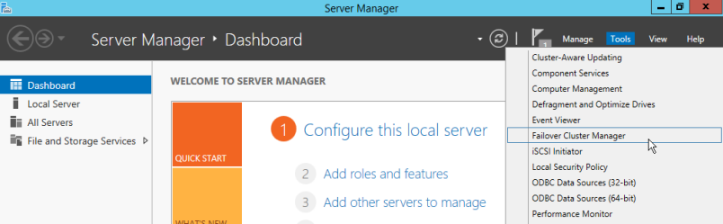
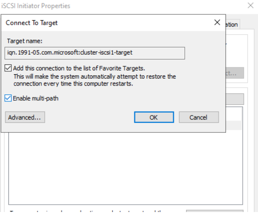
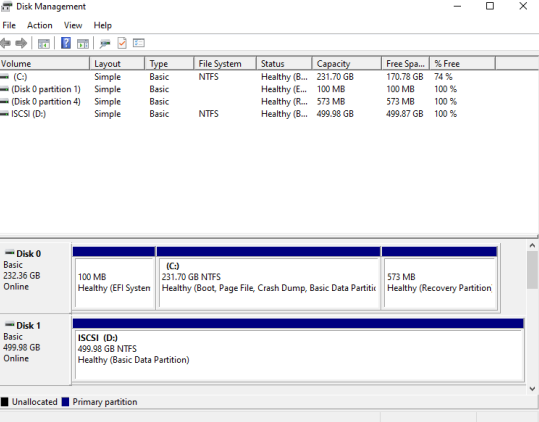
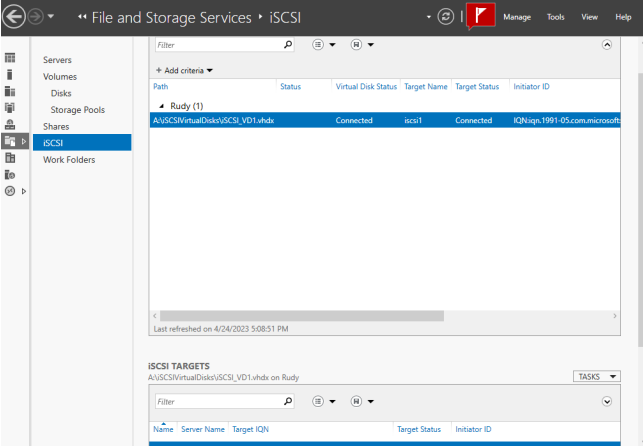
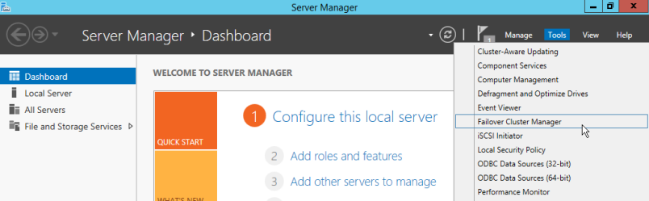
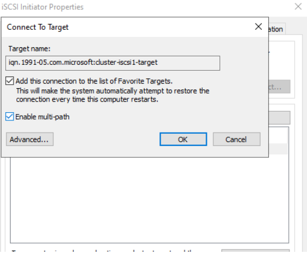
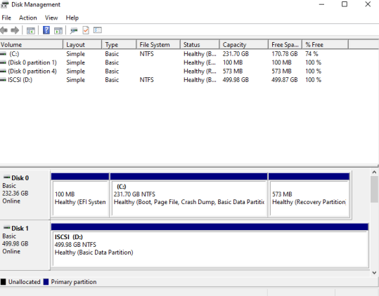
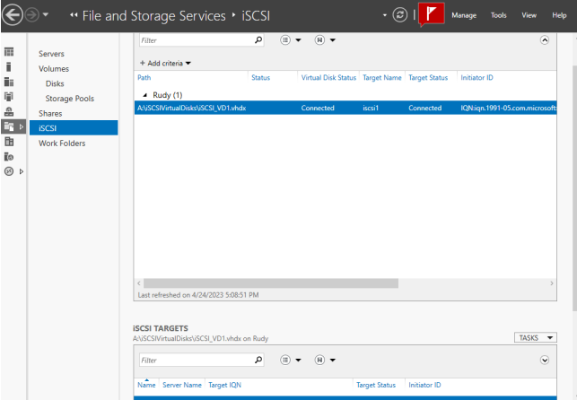
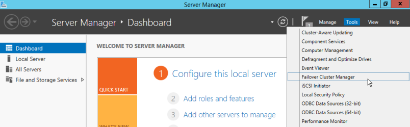
Part 2 — Creating the Failover Cluster
- Added cluster nodes via Failover Cluster Manager
- Ran validation report to confirm compatibility
- Added iSCSI disk as a cluster shared volume
- Created DNS entry for cluster access (ClassCluster)
 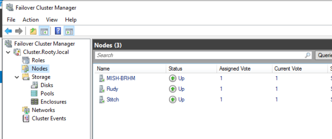
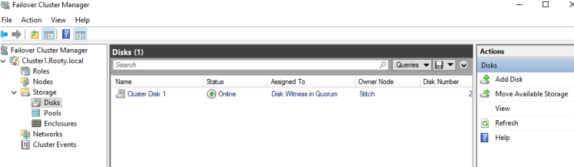
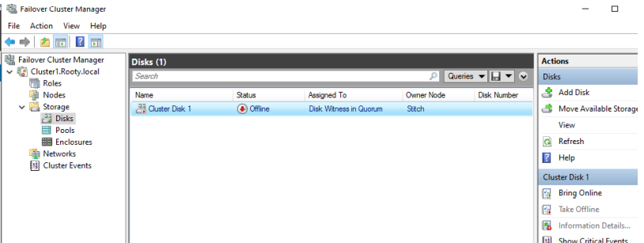
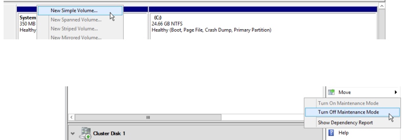
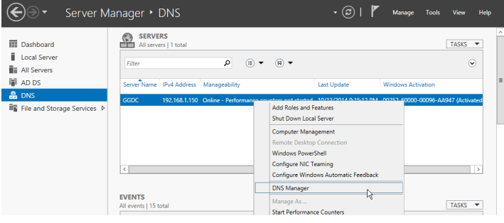
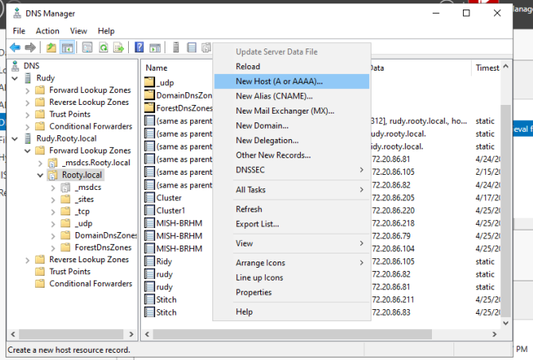
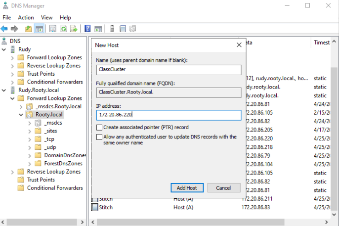
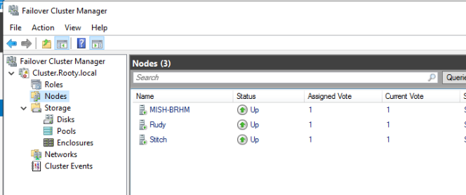
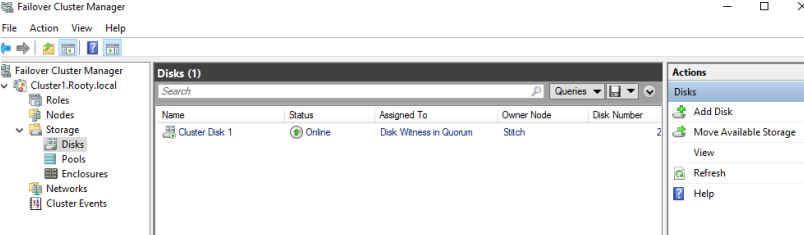
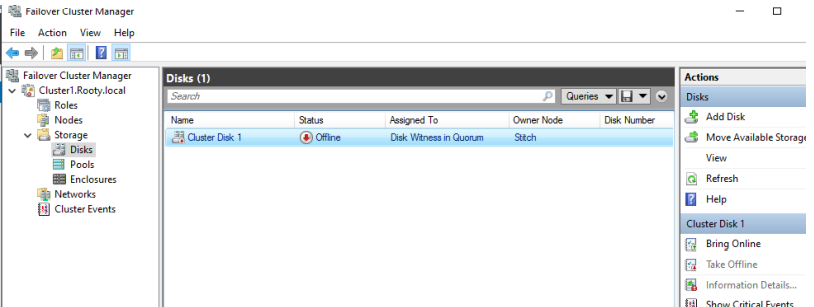
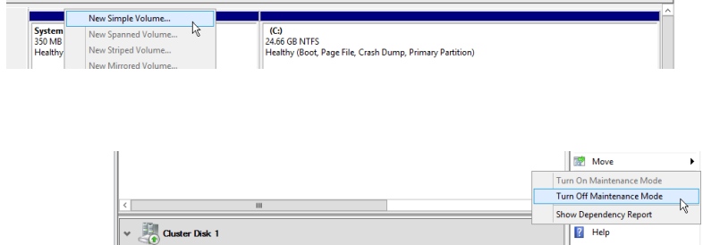
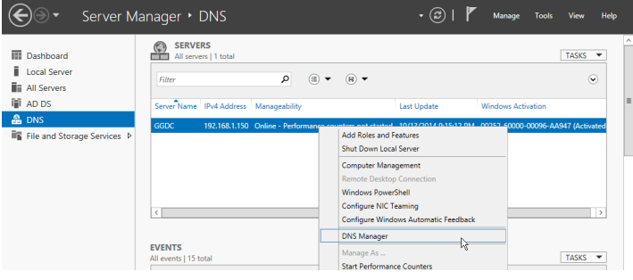
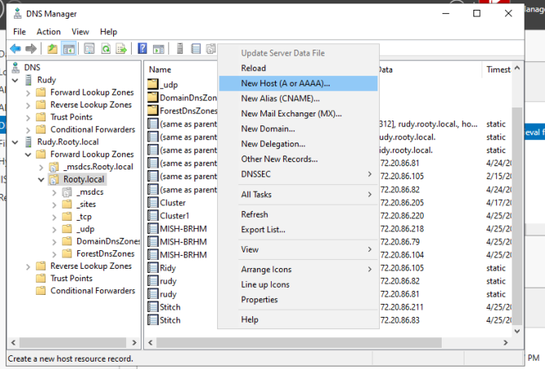
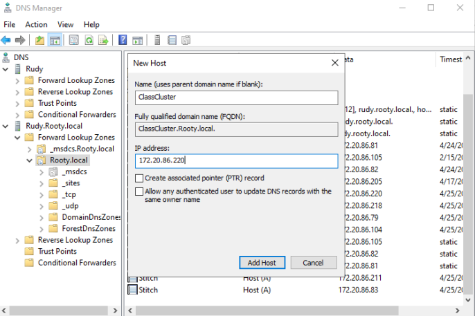
Part 3 — Hyper-V Highly Available VM
- Installed Hyper-V on all servers
- Created a new clustered virtual machine
- Validated failover: VM successfully moved between nodes
Conclusion
We successfully deployed a fully functional failover cluster with shared iSCSI storage, validated node communication, and created a highly available Hyper-V virtual machine. This project strengthened our skills in enterprise storage, clustering, DNS configuration, and server administration.